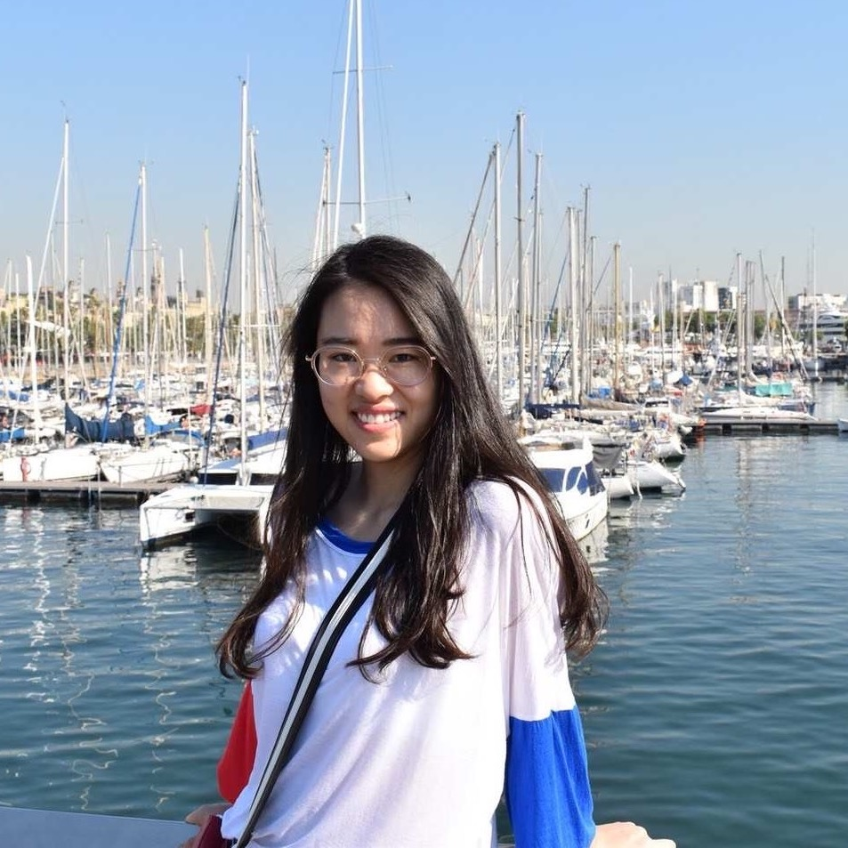

Shuang Ao
Master Postgraduate
Major in Linguistics,
National University of Singapore,
Kent Ridge, Singapore.
Curriculum Vitae
Shuang Ao is currently working on Neural Machine Translation in NLP.
She has over 4 years of teaching experience along with research in Sociolinguistics and Corpus Linguistics.
Her research experience on Family Language Policy and speech analysis like vowel system of Singapore English.
Her personal social websites are
Linkedin |
Github.
Shuang Ao is boardly interested in different fields in NLP, such as Neural Machine Translation and sentiment analysis.
Currently, Shuang Ao is working on improving the accuracy of sentiment analysis and the application of attention in NMT.
Projects and Research:
- May, 2020: Challenge of NLP_real_disaster_or_not_tweets analysis .
- May, 2020: Project of Translation_German_English_Attention .
- May, 2020: Project of NLP_movie_reviews_sentiment_analysis.
- Apr, 2020: Project of Gan_for_MNIST_synthesis.
- Apr, 2020: Project of Transfer_Learning_MNIST_classification.
- May, 2020: Udemy Certificate of Learn PyTorch for Natural Language Processing.
- May, 2020: Udemy Certificate of Learn HTML.
- Apr, 2020: Coursera IBM Certificate of AI Capstone Project with Deep Learning.
- Apr, 2020: Coursera IBM Certificate of Deep Neural Networks with PyTorch.
- Mar, 2020: Coursera IBM Certificate of Machine Learning with Python.
- Mar, 2020: Coursera University of Michigan Certificate of Python Data Structure.
- Mar, 2020: Coursera University of Michigan Certificate of Programming for Everybody .
- Dec, 2019: Coursera Certificate of Introduction to Programming with MATLAB .